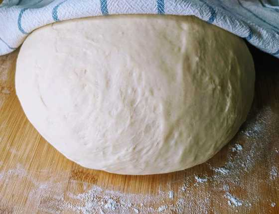
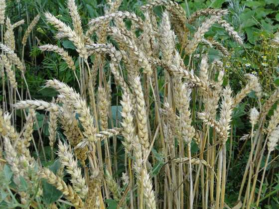
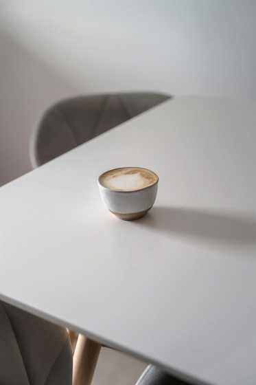
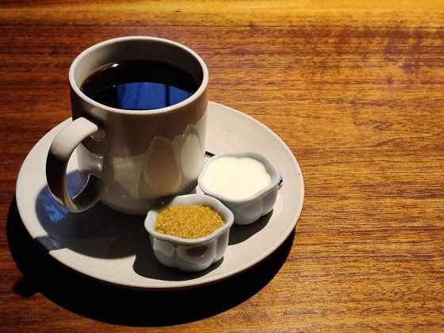

お店のこと
店主の三宮秀雄さんは、パンが大好きで「天然酵母パンの美味しさを広めていきたい」という思いでお店を続けています(大牟田ひとめぐり掲載)。製造から販売までひとりで担い、おすすめの食べ方を聞きながらパンを選べるそうです。
看板のルヴァンは、生地の発酵を見守り、酸味が出る前に引き上げて焼くとのこと。取材では「見守ってるんです」と話されたと紹介されています(福岡リープアップ掲載)。手書きのPOPにも、ルヴァンへの自信がにじみます。
屋号「こっぺ」の意味・由来は確認できていません。このページのコンセプト「見守って焼く」は、上記の紹介記事を元にした制作側の解釈です。




パンのこと
紹介記事で確認できたのは、ライ麦のルヴァンやハード系のパン、白砂糖を使わない自然な甘みのパンなど。種類は多く、柔らかいパンもあるようです。詳しいラインナップ・価格は準備中です。

ライ麦のルヴァン
店主が「いちばん」と推す看板のパン。粉の甘みと焼き目のコクが特徴と紹介されています。

ハード系から柔らかいパンまで
ミチッと密度のあるものも。内容は日により異なる可能性があります(準備中)。

焼きたてが並ぶ棚
売り切れ次第終了と紹介されています。早めのご来店がおすすめです。

そのほかのパン
種類は準備中。最新の情報はInstagramでご確認ください。


掲載の写真はすべてフリー素材のイメージで、店舗の実際の商品・様子ではありません。
営業時間・定休日・価格・電話番号:準備中(情報源により表記が異なるため、お出かけ前にInstagramでご確認ください)
口コミ(イメージ例)
以下は制作側が作成したイメージ例であり、実在のお客様の声ではありません。
噛むほどに粉の甘みが広がるパンでした。酸っぱいのが苦手な私でも食べやすかったです。
おすすめの食べ方を教えてもらえて、家に帰ってからの朝ごはんが楽しみになりました。
手書きのPOPを読みながら選ぶのが楽しい。小さなお店ですが、また寄りたくなります。
写真クレジット
- rye.jpg「Dark rye bread」 Glane23 / CC BY-SA 3.0 / 出典
- stalks.jpg「Wheat stalks」 Quer / CC0 1.0 / 出典
- dough.jpg「Risen bread dough」 Gageills / CC0 1.0 / 出典
- buns.jpg「Cardamom buns」 W.carter / CC0 1.0 / 出典
- rolls.jpg「Pretzel rolls on a tray, December 2023」 Infrogmation / CC BY-SA 4.0 / 出典
- cup.jpg「Coffee Cup on Modern Table」 Genaro35 / CC0 1.0 / 出典
- gold.jpg「Ripe wheat ears」 Jazzmaster1997 / CC BY 4.0 / 出典
- flour.jpg「Flours」 Mudd1 / CC BY-SA 3.0 / 出典
- croissant.jpg「Croissant, whole」 SKopp / CC BY-SA 3.0 / 出典
- cob.jpg「Home made sourdough cob」 Fæ / CC BY-SA 4.0 / 出典
- wood.jpg「Weatherworn top of wooden table」 W.carter / CC0 1.0 / 出典
- coffee.jpg「Black Coffee with Cream and Sugar」 GuavaTrain / CC BY-SA 4.0 / 出典